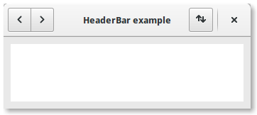

A Gtk.HeaderBar is similar to a horizontal Gtk.Box, it allows to place children at the start or the end. In addition, it allows a title to be displayed. The title will be centered with respect to the width of the box, even if the children at either side take up different amounts of space.
Since GTK+ now supports Client Side Decoration, a Gtk.HeaderBar can be used in place of the title bar (which is rendered by the Window Manager).
A Gtk.HeaderBar is usually located across the top of a window and should contain commonly used controls which affect the content below. They also provide access to window controls, including the close window button and window menu.

import gi
gi.require_version('Gtk', '3.0')
from gi.repository import Gtk, Gio
class HeaderBarWindow(Gtk.Window):
def __init__(self):
Gtk.Window.__init__(self, title="HeaderBar Demo")
self.set_border_width(10)
self.set_default_size(400, 200)
hb = Gtk.HeaderBar()
hb.set_show_close_button(True)
hb.props.title = "HeaderBar example"
self.set_titlebar(hb)
button = Gtk.Button()
icon = Gio.ThemedIcon(name="mail-send-receive-symbolic")
image = Gtk.Image.new_from_gicon(icon, Gtk.IconSize.BUTTON)
button.add(image)
hb.pack_end(button)
box = Gtk.Box(orientation=Gtk.Orientation.HORIZONTAL)
Gtk.StyleContext.add_class(box.get_style_context(), "linked")
button = Gtk.Button()
button.add(Gtk.Arrow(Gtk.ArrowType.LEFT, Gtk.ShadowType.NONE))
box.add(button)
button = Gtk.Button()
button.add(Gtk.Arrow(Gtk.ArrowType.RIGHT, Gtk.ShadowType.NONE))
box.add(button)
hb.pack_start(box)
self.add(Gtk.TextView())
win = HeaderBarWindow()
win.connect("delete-event", Gtk.main_quit)
win.show_all()
Gtk.main()